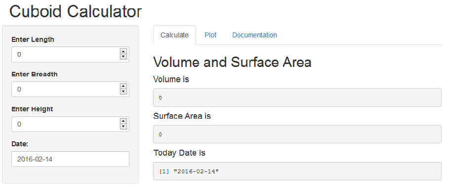
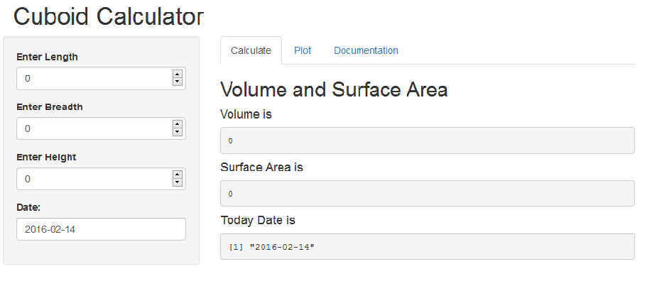
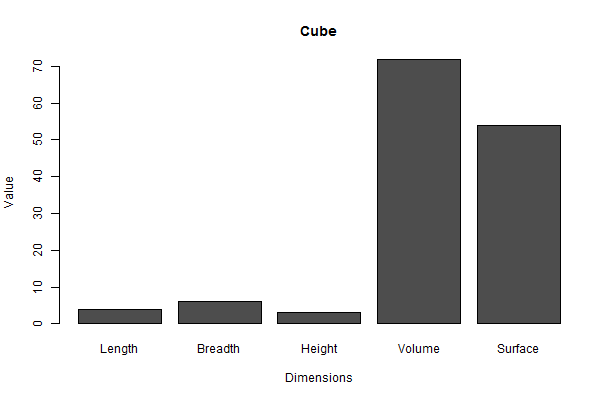

The Calculator
This application allows the user to enter the length, breadth, and height to get the volume and surface area of cuboid.

Rene Kaup
student
The Calculator
This application allows the user to enter the length, breadth, and height to get the volume and surface area of cuboid.

This application can also all input data and calculated data print as BarPlot. This all happened during runtime and the plots can be saved as an image file.

The volume is calculated as follows:
The surface is calculated as follows:
About the Course Developing Data Products
A data product is the production output from a statistical analysis. Data products automate complex analysis tasks or use technology to expand the utility of a data informed model, algorithm or inference. This course covers the basics of creating data products using Shiny, R packages, and interactive graphics. The course will focus on the statistical fundamentals of creating a data product that can be used to tell a story about data to a mass audience.
This application is a project for Coursera Developing Data Products. I admit that this app has no practical use. It only shows to my skills with R and Shiny.
This application is a project for Coursera Developing Data Products. I admit that this app has no practical use. It only shows to my skills with R and Shiny.
The Code can be found here:
My App: